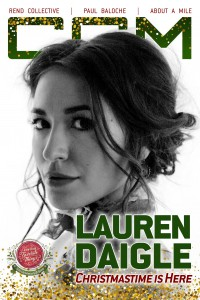

Lauren Daigle
 1 November 2015 CCM Digital |
 15 November 2016 CCM Digital |
 November 2018 Relevant |
Media coverage:
- May 2014 in Worship Leader "New Artist Showcase: Lauren Daigle"
- 15 Apr 2015 in CCM Digital "So Be It", by Matt Conner
- 1 Nov 2015 in CCM Digital "In Every Seanon", by Lena Ziegler
- Mar 2016 in Relevant "The Sound of Music 2016: Lauren Daigle"
- 15 Nov 2016 in CCM Digital "Christmastime Is Here", by Kevin Sparkman
- Jan 2017 in Relevant "The Drop: Conversation: Lauren Daigle"
- Nov 2018 in Relevant "The Life-Changing Homecoming of Lauren Daigle", by Tyler Daswick
- Jan 2019 in Charisma "Charismata: Lauren Daigle"
- Sep 2019 in Relevant "Current: Lauren Daigle Makes Music History"
- Oct 2019 in Charisma "Charismata: Lauren Daigle"
- Nov 2019 in Charisma "Charismata: Lauren Daigle, Katy Hudson, Hillsong, Veggietales"
- Mar 2020 in Charisma "Charismata: Sean Feucht, Lauren Daigle"
Albums & reviews:
2014: How Can It Be EP
2014: How Can It Be
- Nov 2014 in Worship Leader, by Jay Akins
- 1 Nov 2014 in CCM Digital, by Matt Conner
- 1 Jan 2015 in CCM Digital, by Matt Conner
- 15 Apr 2015 in CCM Digital, by Grace S. Aspinwall
2018: Look Up Child
- Sep 2018 in Relevant
- Fall 2018 in Worship Leader, by Daryl Bryant
- Nov 2018 in Charisma
2023: Lauren Daigle (Volume 1)
2024: Sessions
Award Summary (Nominations / Wins)
Dove Awards- 2015 Dove Awards
- Song: "How Can It Be"
- Pop/Contemporary Album: How Can It Be
- New Artist
- Pop/Contemporary Recorded Song: "How Can It Be"
- Song: "Trust In You"
- Songwriter
- Pop/Contemporary Album: How Can It Be
- Artist
- Pop/Contemporary Recorded Song: "Trust In You"
- Contemporary Christian Artist
- Song: "Come Alive (Dry Bones)"
- Songwriter
- Pop/Contemporary Recorded Song: "Come Alive (Dry Bones)"
- Christmas / Special Event Album: Behold: A Christmas Collection
- Pop/Contemporary Recorded Song: "O'Lord"
- Song: "You Say"
- Songwriter
- Pop/Contemporary Album: Look Up Child
- Artist
- Pop/Contemporary Recorded Song: "You Say"
- Contemporary Christian Artist
- Song: "Rescue"
- Songwriter
- Artist
- Pop/Contemporary Recorded Song: "Rescue"
- Artist
- Short Form Music Video: "Hold On To Me"
- Pop/Contemporary Recorded Song: "Hold On To Me"
- Rock/Contemporary Recorded Song: "Place Called Earth"
- Song: "Hold On To Me"
- Contemporary Gospel Recorded Song: "Believe For It"
- 2015 Grammy Awards
- Best Contemporary Christian Music Album: How Can It Be
- Best Contemporary Christian Music Performance/Song: "Trust In You"
- Best Contemporary Christian Music Album: Look Up Child
- Best Contemporary Christian Music Performance/Song: "You Say"
© 2011 CMnexus. Last updated May 2025. Contact: editor -AT- cmnexus -DØT- org